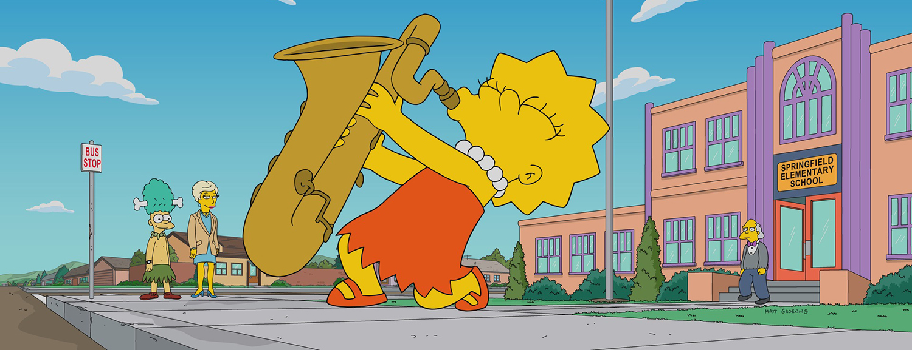

About Lisa
Lisa Marie Simpson is the elder daughter and middle child of the Simpson family on The Simpsons. She is a charismatic 8-year-old girl, who exceeds the standard achievement of the intelligence level of children her age. She is the moral center of her family. She has lots of hobbies such as playing saxophone and guitar, riding and caring for horses, and interest in advanced studies.
Lisa and her family
Lisas's Characteristics
- She's a vegetarian and an environment advocate
- Feminist
- She has a cat named Snow Ball
- Super smart and kind
Lisa enyoing nature
Lisa's Family
Lisa has a really dysfunctional but loving family. Homer is her father, Marge her mother, Bart his big brother and Maggie her baby sister. If you want to know more about them, click the links below!
